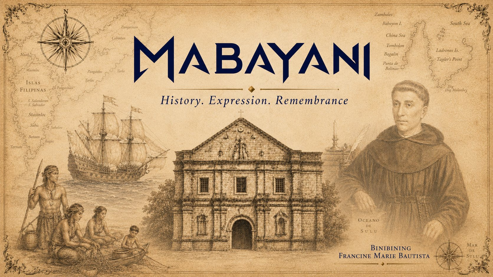

MABAYANI
May kasaysayang nakasulat sa mga libro.
May kasaysayang nakatayo sa bato.
May kasaysayang nananatili sa wika, sayaw, pangalan ng lugar, at alaala ng pamilya.
At may kasaysayang halos nawala dahil walang nakapagsulat ng pangalan ng mga taong gumawa nito.
Ito ang kuwento ng Masinloc sa pamamagitan ng mga taong nabuhay rito, nagbago rito, nagtiis rito, nagtanggol rito, nagdasal rito, nagtrabaho rito, at nagpatuloy rito.
Hindi sila kailangang gawing alamat para maging mahalaga.
Ang tunay na nangyari ay sapat nang makapangyarihan.
MABAYANI.
01Bahagi
Isang salitang iniwan ng lumang tala
Ganito nila tayo nakita.
Bago natin ikuwento kung paano natin gustong alalahanin ang mga nauna sa atin, pakinggan muna natin kung paano sila nakita ng isang taong nasa kabilang panig ng kuwento.
Noong 1788, isinulat ng Augustinian Recollect historian na si Fray Juan de la Concepción ang isang paglalarawan sa mga mamamayan ng Zambales:
“Los habitantes de Zambales distinguíanse por su fiereza.”
Ang mga naninirahan sa Zambales, aniya, ay nakikilala dahil sa kanilang fiereza.
Fierceness.
Hindi neutral ang salitang iyon. Galing iyon sa isang kolonyal at misyonerong pananaw. Ang parehong lumang teksto ay nagsasalita tungkol sa katutubong pananampalataya gamit ang mapanghusgang wika ng panahon nito. Kaya hindi natin tatanggapin ang bawat paglalarawan bilang walang kinikilingang katotohanan.
Pero may isang bagay na hindi natin kailangang burahin.
Nakita nila ang isang bayang hindi madaling yumuko.
May mga naunang Augustino at Dominikong misyon na umurong sa harap ng hirap ng kanilang gawain sa Zambales. Sa mga sumunod na Recollect account, paulit-ulit lumilitaw ang larawan ng mga mamamayang mahirap pasunurin, mahirap ilayo sa sariling paniniwala, at sanay mabuhay sa isang lupain na sila mismo ang nakakaalam.
Ang tawag nila: fiereza.
Ang salitang gagamitin natin para tingnan ang tapang sa loob ng kasaysayang ito:
MABAYANI.
Hindi dahil perpekto ang ating mga ninuno.
Hindi dahil tama sila sa bawat tunggalian.
Hindi dahil lahat ng ginawa nila ay kailangang tawaging kabayanihan.
MABAYANI dahil may tapang sa pagtatanggol, sa pag-angkop, sa pagbuo, sa pagbalik, sa pagtanggap ng pagbabago, sa pagpapanatili ng wika, at maging sa pag-amin kapag hindi pa natin alam ang buong katotohanan.
Evidence stateDOCUMENTED
View the record
What we know
- Fray Juan de la Concepción, an Augustinian Recollect historian, described the inhabitants of Zambales with the phrase “Los habitantes de Zambales distinguíanse por su fiereza.” Licinio Ruiz later quoted the passage and explicitly cited Juan de la Concepción, Historia General de Philipinas, Tome IV, p. 255.
What remains uncertain
- The sentence describes inhabitants of Zambales broadly, not a statistically defined population and not only Masinloc. It should not be presented as an exact statement about every person in Masinloc.
Sources
- Juan de la Concepción, Historia general de Philipinas, Tome IV. Manila: Imprenta del Seminario Conciliar y Real de San Carlos, 1788, p. 255.
Licinio Ruiz, Sinopsis histórica de la Provincia de San Nicolás de Tolentino de las Islas Filipinas, Vol. I. Manila, 1925, p. 20.
A later Recollect biographical inscription on Fr. Andrés del Espíritu Santo repeats the idea with the wording “cuyos naturales, por su fiereza...” Treat that inscription as supporting institutional memory, not as Fr. Andrés speaking in his own voice.
Historical confidence can change when stronger evidence appears. Corrections should be recorded, not hidden.
Bago sila tinawag na mabangis ng isang dayuhan, may buhay na rito.
02Bahagi
Bago ang 1572.
Bago ang 1607.
May mga tao na rito.
Hindi nagsimula ang Masinloc nang mapansin ito ng Espanya.
Hindi rin nagsimula ang isang bayan sa araw na unang isinulat ng isang prayle ang pangalan nito.
Bago naging dokumento ang lugar, tahanan na ito.
Sa kanlurang baybayin ng Gitnang Luzon, ang dagat, kapatagan, ilog, kagubatan, at Zambales mountain range ay hindi dekorasyon sa kasaysayan. Sila ang kondisyon ng buhay. Sa mas malawak na kasaysayan ng mga Sambal, makikita ang pangangaso, pangangalap, pagsasaka, palay, pakikipagpalitan, paglalakbay at mga katutubong paniniwalang nakaugnay sa lupa, ani, sakit, pangangaso at mga espiritu.
May mga Aeta ring komunidad sa kabundukan ng Zambales na may sariling kasaysayan, kaalaman sa kapaligiran, galaw, kabuhayan at pagkakakilanlan. Hindi sila background character sa kuwento ng mga taga-kapatagan.
Pero kailangan nating maging maingat.
Hindi lahat ng alam natin tungkol sa sinaunang Sambal at Aeta sa Zambales ay direktang dokumento tungkol sa mismong lugar na tinatawag nating Masinloc ngayon. May mga datos na panlalawigan, panrehiyon, at mula sa mas huling panahon.
Kaya hindi tayo gagawa ng pekeng eksena na parang alam natin kung ano ang almusal ng isang pamilyang Masinloqueño noong 1500, kung saan eksaktong nakatayo ang bahay nila, o ano ang pangalan ng kanilang pinuno.
Ang masasabi natin nang ligtas ay mas simple at mas mahalaga:
May mga pamayanang may buhay, wika, paniniwala, ugnayan, trabaho at alaala bago naging sentro ng kolonyal na tala ang Masinloc.
Ang unang petsang nakasulat ay hindi unang araw ng isang tao.
Kung ang unang dokumento ay hindi birth certificate ng isang bayan, paano natin dapat ikuwento ang simula?
Evidence statesDOCUMENTEDRECONSTRUCTED
View the record
What we know
- Sambal-speaking communities inhabited western Central Luzon before Spanish mission records. Late-sixteenth- and seventeenth-century sources document Zambal communities, beliefs, hunting, agriculture and social practices. Aeta communities also have long-standing presence in Zambales.
What remains uncertain
- Exact settlement layout, household composition, individual leaders, and daily routines in pre-1607 Masinloc are not sufficiently documented in the current source set.
Sources
- Juan de la Concepción, Historia general de Philipinas, Tome IV, 1788.
William Henry Scott, Barangay: Sixteenth-Century Philippine Culture and Society, 1994, Central Luzon/Zambal discussion.
Late-sixteenth-century Boxer Codex illustrations and descriptions of Zambal and Aeta subjects, used as regional evidence only.
Early/late-seventeenth-century Zambales religious records summarized in modern scholarship on Indigenous knowledge; interpret colonial descriptions critically.
University of the Philippines Department of Linguistics, Sambal language capsule, for current linguistic classification and distribution.
Historical confidence can change when stronger evidence appears. Corrections should be recorded, not hidden.
The research behind this section
03Bahagi
1572
Mahalagang petsa. Pero ano ba talaga ang pinatutunayan nito?
Maraming Masinloqueño ang lumaki na may petsang March 16, 1572.
Kapag paulit-ulit na nakikita ang isang petsa sa profile, souvenir, program at website, natural na isipin nating matagal na itong napatunayan.
Pero may pagkakaiba ang “matagal nang inuulit” at “may dokumentong nagpapatunay.”
Ang 1572 ay may tunay na lugar sa kasaysayan ng Zambales. Ito ang panahon ng paglawak ng ekspedisyong Espanyol sa kanlurang Luzon at ng mga paglalakbay na kaugnay ni Juan de Salcedo sa rehiyon.
Ibig sabihin, mahalaga ang 1572 bilang context ng Spanish contact at exploration.
Pero sa kasalukuyang ebidensiyang hawak natin, hindi pa nito pinatutunayan na March 16, 1572 ang pormal na pagkakatatag ng Masinloc bilang pueblo, munisipalidad, parokya, o unang pamayanan.
Contact is not automatically founding.
Exploration is not automatically municipal creation.
At ang unang pagdating ng isang kolonyal na kapangyarihan ay hindi simula ng buhay ng mga taong naroon na.
Hindi natin kailangang gawing mas matanda ang Masinloc para maging mahalaga ang Masinloc.
Mas malakas ang kasaysayan kapag hindi nito kailangang pilitin ang isang petsa.
Evidence statesDOCUMENTEDSTILL OPEN
The record, in short
- 1572 = Spanish contact/exploration context in Zambales.
- NOT YET PROVEN = formal founding of Masinloc on March 16, 1572.
View the record
What we know
- Spanish expeditions reached and operated in the Zambales/Pangasinan coast in the 1570s. Juan de Salcedo is part of that regional contact history.
What remains uncertain
- No primary or authoritative founding instrument has yet been pinned that establishes March 16, 1572 as the formal founding date of Masinloc.
Sources
- Regional Spanish-era histories of Zambales and Salcedo’s northern Luzon expeditions.
Modern references that repeat March 16, 1572 are treated as derivative until their source chain reaches an authoritative document.
Historical confidence can change when stronger evidence appears. Corrections should be recorded, not hidden.
The research behind this section
At dito nagsisimula ang isang tanong na hindi natin dapat takasan.
04Bahagi
Bakit March 16?
Hindi namin gustong burahin ang March 16.
Gusto naming malaman kung ano talaga ang inaalala nito.
Sa ngayon, ang petsang March 16, 1572 ay malawak na inuulit bilang founding date ng Masinloc. Pero sa mga sangguniang nasuri para sa pahinang ito, hindi pa natutunton ang isang primary document na nagsasabing sa araw na iyon pormal na itinatag ang Masinloc.
May ilang posibleng paliwanag:
Baka galing ito sa mas huling civic commemoration.
Baka may administratibong tala na hindi pa natin nakikita.
Baka may relihiyoso o lokal na tradisyong nagdikit sa petsa sa kuwento ng bayan.
Baka may lumang historical claim na paulit-ulit na nakopya hanggang mawala ang unang citation.
Pero posibilidad lamang ang mga iyon.
Hindi natin gagawing sagot ang isang hypothesis dahil lang maganda itong pakinggan.
May isa pang mahalagang clue: ang pangunahing kapistahan ni San Andrés Apostol ay November 30, hindi March 16. Kaya hindi sapat ang patronal feast para ipaliwanag ang March 16.
Ang tamang label sa ngayon:
STILL OPEN.
Ang isang bayang MABAYANI ay hindi natatakot sa tanong na wala pang sagot.
Evidence stateSTILL OPEN
View the record
What we know
- March 16, 1572 is widely repeated in modern references.
What remains uncertain
- The origin, first recorded use, and historical basis of March 16 as Masinloc’s commemorative/founding date.
Historical confidence can change when stronger evidence appears. Corrections should be recorded, not hidden.
05Bahagi
Ang mas matibay na mission-town anchor
18 November 1607
Dito nagiging mas malinaw ang nakasulat na kuwento ng Masinloc.
Sa isang Recollect history na inilathala noong 1879, isinulat ni Fray Patricio Marcellán ang isang napakalinaw na detalye tungkol kay Fray Andrés del Espíritu Santo. Ayon sa tala, sa Masinloc siya nangaral noong 1607 at doon siya nakapagbuo ng pueblo, tirahan at simbahan sa ilalim ng patronahe ni San Andrés Apostol:
“...fundar pueblo, levantar habitación é iglesia con la advocación de S. Andrés Apóstol, dia diez y ocho de Noviembre de mil seiscientos y siete.”
18 November 1607.
Ito ang pinakamalinaw na eksaktong petsang kasalukuyang natutunton natin para sa Recollect account ng pagkakatatag ng pueblo at simbahan.
Pero kailangan pa ring linawin kung ano ang ibig sabihin ng “founding.”
Hindi ibig sabihin nito na walang tao sa Masinloc bago ang araw na iyon.
Hindi ibig sabihin nito na si Fr. Andrés ang lumikha ng komunidad mula sa wala.
Hindi ibig sabihin nito na November 18 ang awtomatikong katumbas ng modernong legal incorporation ng munisipalidad.
Ang pinatutunayan ng tala ay mas tiyak:
Noong 1607, pumasok ang Masinloc sa mas malinaw na Recollect mission-pueblo record. At sa Recollect historical tradition ni Marcellán, 18 November 1607 ang araw na iniuugnay sa pagtatayo ng pueblo, tirahan at simbahan ni San Andrés.
May buhay bago ang petsa.
Pero simula rito, mas marami nang pangalang, gusali, tungkulin at dokumentong sinusundan ng archive.
Hindi naging totoo ang Masinloc noong 1607.
Mas naging visible lamang ito sa uri ng dokumentong kadalasang pinapaboran ng history books.
Evidence stateDOCUMENTED
The record, in short
- 18 NOVEMBER 1607
- DOCUMENTED IN A 1879 RECOLLECT HISTORY
- Fr. Andrés del Espíritu Santo associated with the founding of the pueblo and a church dedicated to San Andrés Apostol.
- Masinloc already had inhabitants before the Recollect mission-town record.
- This is not evidence that human settlement began in 1607.
View the record
What we know
- Patricio Marcellán gives the exact date 18 November 1607 and says Fr. Andrés founded a pueblo, dwelling and church dedicated to St. Andrew. Romanillos independently establishes Fr. Andrés and Fr. Jerónimo de Cristo in Masinloc in 1607 and describes Andrés as founder of Masinloc in the mission-pueblo tradition and builder of the first church.
What remains uncertain
- Whether Marcellán copied the exact date from an earlier document now not yet pinned in this project; the precise civil/legal status represented by “fundar pueblo” in 1607; how local inhabitants themselves understood the reorganization.
Sources
- Patricio Marcellán de San José, Provincia de San Nicolás de Tolentino de Agustinos Descalzos de la Congregación de España e Indias. Manila: Colegio de Santo Tomás, 1879, p. 78.
Marcellán, “Pueblo de Masinloc,” pp. 61–63 for the 1607 mission context.
Emmanuel Luis A. Romanillos, “Masinloc, Zambales: Augustinian Recollect Mission (1607–1902),” Philippine Social Science Journal 2(2), 2019, pp. 151–171; later reprinted/expanded in the Recollect historical volume used in this project.
Historical confidence can change when stronger evidence appears. Corrections should be recorded, not hidden.
The research behind this section
06Bahagi
Fr. Andrés del Espíritu Santo
Isang pangalang naingatan ng institusyon. Isang kuwento na hindi niya kayang punuin mag-isa.
Ipinanganak si Andrés del Espíritu Santo sa Valladolid, Spain, noong 1585. Kasama siya sa unang yugto ng Augustinian Recollect mission sa Pilipinas. Noong 1607, nakarating siya sa Masinloc kasama si Fray Jerónimo de Cristo.
Sa Recollect historical tradition, si Andrés ang tinatawag na founder ng Masinloc mission-pueblo at builder ng unang church of God sa bagong pueblo.
Mahalaga ang pangalan niya.
Pero hindi siya ang buong kuwento.
Kung may dalawang prayleng dumating sa isang bayang may mga tao na, kailangan nilang matutunan kung paano mabuhay sa isang bagong kapaligiran. Kailangan nila ng pagkain. Kailangan nilang makipag-usap. Kailangan nilang makaalam ng daan, ilog, baybayin at mga pamayanang hindi nila kilala.
May tala na ilang buwan silang nabuhay sa root crops at gulay. May tala ng kanilang paglalakbay. May tala ng simbahan.
Ang hindi malinaw sa archive ay ang mga pangalan ng mga lokal na taong naging bahagi ng araw-araw na prosesong iyon.
Sino ang nagsalin?
Sino ang nagpakita ng daan?
Sino ang nagdala ng pagkain?
Sino ang pumili na makinig?
Sino ang tumanggi?
Sino ang tumanggap ng bagong pananampalataya?
Sino ang tumulong magtayo ng unang istruktura?
Hindi natin alam ang karamihan sa kanilang pangalan.
At hindi natin sila bibigyan ng pekeng pangalan para lang maging mas dramatic ang page.
We know his name because an institution preserved it.
The people beside him are much harder to recover.
That imbalance is part of the history.
Evidence stateDOCUMENTED
Profile
- FR. ANDRÉS DEL ESPÍRITU SANTO
- Born: Valladolid, Spain, January 1585, according to Recollect biographical records.
- Masinloc: 1607.
- With: Fr. Jerónimo de Cristo.
- Role in Recollect sources: founder of the mission-pueblo tradition and builder of the first light-material church.
- Important limitation: “founder” here does not mean founder of the first human community in Masinloc.
View the record
What we know
- Andrés reached Masinloc in 1607 with Jerónimo de Cristo. Romanillos cites Sádaba and Recollect sources. Marcellán gives 18 November 1607 for pueblo/church foundation.
What remains uncertain
- Most local names participating in the mission’s establishment and early daily life.
Sources
- Francisco Sádaba, Catálogo de los Religiosos Agustinos Recoletos... Madrid, 1906, pp. 42–43 for Andrés biography.
Patricio Marcellán, 1879, pp. 61–63, 78.
Emmanuel Luis A. Romanillos, 2019/2021 Masinloc study.
Historical confidence can change when stronger evidence appears. Corrections should be recorded, not hidden.
07Bahagi
Masinloc was never only a point on a map.
Dagat sa kanluran.
Kabundukan sa silangan.
Mga ilog at kapatagan sa pagitan.
Ang heograpiya ang isa sa pinakamatagal na tauhan sa kasaysayan ng Masinloc.
Sa mga Recollect account, inilarawan ang lupa bilang produktibo, may palay, halamang-gamot, maiinom na tubig, mga ilog na dumadaloy mula silangan patungong kanluran, at kagubatang pinagmumulan ng kahoy. Sa mas huling ika-19 na siglong paglalarawan, ang mga tao ng Masinloc ay nakaugnay sa pagsasaka, produktong agrikultural, kahoy, hayop, at kalakalan.
Hindi natin dapat ibalik lahat ng mas huling detalye sa 1607 na parang walang nagbago sa loob ng mga siglo.
Pero malinaw ang mas malaking pattern:
Ang bundok ay kabuhayan at kanlungan.
Ang kapatagan ay tirahan at taniman.
Ang ilog ay tubig at galaw.
Ang dagat ay pagkain, daan, kalakalan, pagdating at panganib.
Sa kasaysayan ng mga MABAYANI, hindi puwedeng ihiwalay ang tao sa landscape.
Dito sila nabuhay.
Dito sila nag-adjust.
Dito rin sila tatakbo kapag dumating ang panganib mula sa dagat.
Evidence statesDOCUMENTEDRECONSTRUCTED
View the record
What we know
- Romanillos, drawing from Recollect sources, records fertile land, potable water, rivers Baliti and Vavandui, medicinal plants and timber. Nineteenth-century descriptions document agricultural products and trade in Masinloc.
What remains uncertain
- Exact continuity of river names, settlement locations and livelihood proportions across centuries.
Sources
- Romanillos, Masinloc study, climate/agricultural products section.
Patricio Marcellán, 1879, “Pueblo de Masinloc.”
Late-nineteenth-century Monografía de Zambales for period-specific economy.
Historical confidence can change when stronger evidence appears. Corrections should be recorded, not hidden.
08Bahagi
Conversion was not one moment.
Madaling gawing simple ang salitang “conversion.”
Parang may dumating, nangaral, naniwala ang lahat, at natapos ang kuwento.
Hindi ganoon kalinis ang kasaysayan.
Sa mas malawak na Recollect practice, bahagi ng misyon ang pag-aaral ng lokal na wika, pagtuturo ng doktrinang Kristiyano, pagbibinyag, sakramento, pagtatatag o pag-aayos ng mga pueblo, pagbuo ng simbahan, plaza, daan at iba pang istruktura. Kasama rin dito ang reducción: ang pagtipon o paglipat ng mga nakakalat na pamayanan tungo sa mas sentralisadong settlement na mas madaling pangasiwaan ng simbahan at kolonyal na pamahalaan.
Ang prosesong iyon ay may pananampalataya.
May pakikipagtulungan.
May lokal na pagpili.
May pakinabang para sa ilan.
May pagkawala at disruption para sa iba.
May pagtutol.
May pressure.
May bagong authority.
May bagong records.
At hindi pare-pareho ang naging tugon ng lahat.
May mga lokal na taong naging Kristiyano.
May mga pamayanang nagpatuloy sa dating paniniwala.
May mga Aeta at Sambal na nakaranas ng kolonyal na paglawak sa magkaibang paraan.
May mga ulat ng tunggalian sa upland at lowland communities, pero ang mga ulat na iyon ay isinulat kadalasan mula sa missionary perspective.
Kaya hindi natin tatawaging “civilized” ang isang tao dahil nabinyagan siya.
Hindi natin tatawaging “savage” ang isang tao dahil tumanggi siya.
Ang mas mahalagang tanong ay:
Ano ang nangyari sa isang komunidad kapag pumasok ang bagong pananampalataya, bagong pamahalaan, bagong settlement pattern, at bagong paraan ng pag-record ng buhay?
One answer is visible around us today.
Christianity became deeply rooted in Masinloc.
But the path toward that reality was made by real people making choices inside unequal historical conditions.
Evidence statesDOCUMENTEDRECONSTRUCTED
View the record
What we know
- Recollect mission practice involved language learning, catechesis, sacraments, settlement consolidation and infrastructure. Masinloc became an important mission center in northern Zambales.
What remains uncertain
- Exact identities and motives of early local translators, guides, converts, resisters and builders.
Sources
- Romanillos, 2019/2021.
Patricio Marcellán, 1879.
Andrés del Espíritu Santo, Relación de la fundación y progresos de esta santa Provincia de San Nicolás de Tolentino, later published in BPSN 55 (1965), pp. 66–179.
Ángel Martínez Cuesta, histories of the Augustinian Recollect mission.
Historical confidence can change when stronger evidence appears. Corrections should be recorded, not hidden.
09Bahagi
Hindi ito ang simbahang nakita nila noong 1607.
Kapag tinitingnan natin ang San Andrés Church ngayon, madaling isipin na iyon din ang gusaling nakita noong panahon ni Fr. Andrés.
Hindi.
Ayon sa Recollect historical account, ang unang house of God na itinayo ni Fr. Andrés ay gawa sa karaniwang light materials ng panahon. Hindi ito nagtagal.
Wala pa ang coral-stone façade na kinukunan natin ngayon.
Wala pa ang kasalukuyang massing ng simbahan.
Wala pa ang mga bahagi ng gusaling nabuo at nabago sa sumunod na mga siglo.
Mahalaga ang correction na ito dahil ang heritage ay hindi magic object na biglang lumitaw noong 1607 at nanatiling pareho hanggang ngayon.
Ang simbahan ay layer upon layer of work.
Isang unang istrukturang nawala.
Isang mas matibay na simbahan na itinayo kalaunan.
Mga lindol.
Mga nasirang dokumento.
Mga pagkukumpuni.
Mga pari at manggagawang nagpalit-palit.
Mga henerasyong tumingin sa sirang bahagi at nagpasiyang ayusin ito.
Ang nakikita natin ngayon ay hindi patunay na walang nagbago.
Patunay ito na may mga taong paulit-ulit na tumugon kapag may nasisira.
Evidence stateDOCUMENTED
View the record
What we know
- The first church built under Fr. Andrés in Masinloc was of light materials and did not last. The present stone church belongs to later centuries.
Sources
- Romanillos, Masinloc study, church section.
Marcellán, 1879, for 1607 church foundation.
Historical confidence can change when stronger evidence appears. Corrections should be recorded, not hidden.
The research behind this section
10Bahagi
We know many administrators.
Do we know the hands?
Sa mga lumang tala, napakahusay nating makasunod sa mga pangalan ng pari.
May listahan ng mga cura.
May petsa ng assignment.
May pangalan ng provincial.
May archive reference.
May sulat.
Pero ang isang malaking simbahan ay hindi binubuo ng pangalan sa margin ng libro.
Kailangan ng bato.
Kailangan ng apog.
Kailangan ng kahoy.
Kailangan ng transportasyon.
Kailangan ng scaffolding.
Kailangan ng pagkain para sa mga nagtatrabaho.
Kailangan ng mga taong bubuhat, huhubog, magkakabit, mag-aayos, magpapalit ng bubong, at babalik pagkatapos ng pinsala.
Sa kasaysayan ng kolonyal na simbahan sa Pilipinas, ang paggawa ng malalaking istruktura ay laging nangangailangan ng local labor at material knowledge. Pero hindi sapat ang kasalukuyang tala para pangalanan ang bawat Masinloqueñong gumawa sa San Andrés o para ideklara kung anong labor arrangement ang ginamit sa bawat yugto.
Kaya hindi natin sasabihing alam natin ang hindi natin alam.
Ang masasabi natin:
Hindi kayang buuin ng isang pangalan ang isang simbahan.
May mga MABAYANI na ang naiwan sa atin ay hindi pirma, kundi bato.
Ilang beses na tayong dumaan sa harap ng simbahan nang hindi naiisip ang mga kamay na wala nang pangalan?
Evidence statesDOCUMENTEDSTILL OPEN
View the record
What we know
- The stone church was a multi-generational construction and restoration project. Recollect and diocesan administrators are often named; local laborers generally are not individually preserved in the sources currently available.
Historical confidence can change when stronger evidence appears. Corrections should be recorded, not hidden.
11Bahagi
Orders changed.
Priests changed.
Governments changed.
The people remained.
Hindi iisang religious order ang humawak sa lahat ng yugto ng kasaysayan ng Zambales.
Nagkaroon ng Augustino.
Dominikano.
Recollect.
Secular clergy.
Nagbago rin ang kolonyal na pamahalaan at kalaunan ang mismong political order ng bansa.
Pero hindi nagre-reset ang buhay tuwing nagbabago ang namamahala.
May ipinapanganak.
May nag-aasawa.
May namamatay.
May nagtatanim.
May nangingisda.
May nag-aayos ng bahay.
May nag-aaral ng bagong dasal.
May patuloy na gumagamit ng lumang salita.
May lumilipat.
May bumabalik.
Ang parish books mismo, kapag nabubuhay, ay nag-iiwan ng bakas ng ganitong ordinaryong continuity: baptism, marriage, death, population, tributes, ministers.
Ang bayan ay hindi lang kuwento ng taong nakaupo sa pinakamataas na posisyon.
Ang bayan ay ang libu-libong buhay na kailangang magpatuloy kahit sino pa ang nakaupo roon.
Sino ba talaga ang nagdadala ng bayan kapag nagbabago ang namumuno?
Evidence statesDOCUMENTEDRECONSTRUCTED
View the record
What we know
- Masinloc passed through changes in ecclesiastical administration while parish and community records continued unevenly.
Historical confidence can change when stronger evidence appears. Corrections should be recorded, not hidden.
12Bahagi
The same sea can feed a town and expose it.
Bago maging eksena ng labanan ang dagat, daan muna ito.
Dito dumaan ang mga misyonero.
Dito dumaan ang kalakalan.
Dito nakaugnay ang mga pulo at baybayin.
Dito rin nakadepende ang kabuhayan ng maraming henerasyon.
Sa Masinloc, hindi puwedeng paghiwalayin ang history at sea.
Ang coast ang nagbukas sa bayan sa labas.
At dahil bukas ito sa labas, bukas din ito sa panganib.
Noong 1649, nagbago ang tanawin ng dagat.
Hindi dahil tumigil itong maging dagat.
Kundi dahil may anim na caracoa na lumitaw sa kuwento.
Evidence stateDOCUMENTED
1649.
Six caracoas.
More than six hundred reported fighters.
And a town forced to decide how to survive the day.
13Bahagi
1649
The day the sea brought a raiding force to Masinloc.
Ayon sa Recollect historical account, anim na caracoa ang dumaong sa baybayin ng Masinloc noong 1649.
Mahigit animnaraang mandirigma ang iniulat na nagsimulang bumaba mula sa mga sasakyang-dagat.
Ang source ay gumagamit ng kolonyal na katawagang “Moros” at iniuugnay ang raiding expeditions sa Jolo at Borneo.
Sa harap ng banta, malaking bahagi ng mga residente ang umatras patungo sa kalapit na kabundukan para sa kaligtasan.
Huwag nating gawing kahihiyan ang survival.
Ang tala ay hindi nagsasabi kung sino ang unang tumakbo, sino ang may kasamang bata, sino ang nagbantay sa matanda, o sino ang nagsabing pumunta sa bundok. Hindi natin pupunan ang mga detalyeng iyon ng eksenang gawa-gawa.
Ang alam natin ay ito:
Nasa Masinloc noon si Fray Francisco de San José.
Pinamunuan niya, ayon sa Recollect account, ang mga Zambaleño sa pagtatanggol sa bayan. Napaatras ang attacking force at ang mga nakaligtas ay pumunta sa kalapit na Pulô San Salvador.
Kinabukasan, sinundan sila ni Fray Francisco at ng maraming Zambaleño fighters. Iniulat ng source na nakuha ng mga taga-Masinloc ang mga caracoa at war materiel.
Malakas ang dokumentasyon ng pangyayaring ito kung ikukumpara sa maraming bahagi ng maagang lokal na kasaysayan.
Pero may malaking butas.
Alam natin ang pangalan ng prayle.
Hindi natin alam ang pangalan ng karamihan sa mga taong kasama niyang nagtanggol sa Masinloc.
Hindi ibig sabihin na wala silang pangalan.
Ibig sabihin, hindi naingatan ng mga dokumentong hawak natin ang mga pangalang iyon.
May mga mukha.
May mga pamilya.
May mga taong tumayo sa lupang ito bago pa nila alam na apat na siglo pagkatapos, babalikan natin ang araw na iyon.
Hindi natin sila bibigyan ng pekeng pangalan.
Pero hindi rin natin hahayaang maging footnote lang sila.
They were MABAYANI.
What we will not do
- Invent names.
- Invent speeches.
- Invent uniforms.
- Invent exact positions on the beach.
- Invent family scenes.
- Invent casualties beyond what the source explicitly supports.
What we will do
- Keep looking.
We already know they could defend the town.
The question will come later:
What does defending Masinloc mean in our time?
Evidence stateDOCUMENTED
The record, in short
- 1649
- DOCUMENTED
- Six caracoas landed at Masinloc.
- More than 600 fighters were reported to have begun disembarking.
- A great majority of residents withdrew toward nearby mountain fastness for safety.
- Fray Francisco de San José is named in the surviving Recollect account.
- Local defenders are identified collectively as Zambaleños / Masinloc fighters.
- The landing force was repelled.
- Survivors withdrew toward Pulô San Salvador.
- The following day, Fray Francisco and Zambaleño fighters pursued them.
- The Recollect account reports capture of the caracoas and war materiel.
- Individual names of most local defenders remain unrecovered.
View the record
What we know
- The details above are recorded by Emmanuel Luis A. Romanillos using Recollect sources. Romanillos cites Francisco Sádaba for Fray Francisco de San José.
What remains uncertain
- Names of most local defenders; exact casualty counts and individual actions; full perspective of the attacking force; exact tactical sequence beyond the written account.
Sources
- Emmanuel Luis A. Romanillos, “Masinloc, Zambales: Augustinian Recollect Mission (1607–1902),” 2019/2021, pp. corresponding to the 1649 section (reprint pp. 75–76).
Francisco Sádaba, Catálogo de los Religiosos Agustinos Recoletos..., Madrid, 1906, pp. 92–93, cited for Fray Francisco de San José.
Historical confidence can change when stronger evidence appears. Corrections should be recorded, not hidden.
The research behind this section
14Bahagi
Bravery does not require a permanent enemy.
May salitang kailangang hawakan nang maingat sa 1649 account: “Moro.”
Ito ang katawagang ginamit sa maraming Spanish colonial records para sa mga Muslim maritime communities at forces mula sa iba’t ibang bahagi ng katimugang Pilipinas at karatig na rehiyon.
Sa 1649 Masinloc account, ang raiding force ay iniuugnay sa Jolo at Borneo.
Hindi nito ibig sabihin na ang mga Muslim na Pilipino ngayon ay kaaway ng Masinloc.
Hindi rin nito ibig sabihin na iisang kuwento lamang ang mayroon ang mga maritime communities sa timog. Ang mas malawak na kasaysayan ay may Spanish conquest, sultanates, trade, slavery, raiding, retaliation, political resistance at digmaan sa maraming panig.
Puwedeng parangalan ang pagtatanggol ng mga taga-Masinloc nang hindi gumagawa ng bagong galit laban sa kapwa Pilipino.
MABAYANI does not need an inherited enemy.
It needs historical truth.
Evidence stateDOCUMENTED
15Bahagi
Three chiefs.
Three missing names.
Labing-isang taon lamang matapos ang 1649 defense, muling napasok ang northern Luzon sa isang malawak na krisis.
Ang Malong Rebellion ng 1660–1661 ay nagsimula sa Pangasinan sa ilalim ni Andrés Malong at kumalat sa mas malaking rehiyon. Ang mas malawak na rebellion ay bahagi ng kasaysayan ng pagtutol sa Spanish colonial authority, kasama ang mga grievance tungkol sa tribute, labor at local power.
Sa working source trail para sa Masinloc, may isang reconstruction na nag-uugnay sa bayan sa siege, pag-alis sa dagat, pakikipag-ugnayan sa Bagác, at pagbabalik ng tatlong local chiefs na tumulong sa pag-recover ng Masinloc.
May isa ring pangalang lumilitaw sa working trail: Bernardino de la Concepción, kaugnay ng dispatches at local response.
Pero hindi pareho ang lakas ng ebidensiya nito sa 1649 episode.
Hindi pa natin natutunton nang sapat ang source chain para ikuwento ang bawat galaw bilang settled fact.
At higit sa lahat:
Hindi pa natin nababawi ang pangalan ng tatlong chiefs.
NAME NOT YET RECOVERED
NAME NOT YET RECOVERED
NAME NOT YET RECOVERED
Hindi natin alam ang barangay nila.
Hindi natin alam ang lineage nila.
Hindi natin alam ang descendants nila.
Hindi natin alam kung anong eksaktong title ang ginamit nila sa sariling wika.
Ang temptation ay punan ang mga puwang.
Hindi natin gagawin iyon.
Ang nawawalang pangalan ay hindi permission para mag-imbento.
It is a reason to keep searching.
- NAME NOT YET RECOVERED
- NAME NOT YET RECOVERED
- NAME NOT YET RECOVERED
Evidence statesRECONSTRUCTEDSTILL OPEN
The record, in short
- 1660–1661
- RECONSTRUCTED / STILL OPEN
- The Malong Rebellion is a documented northern Luzon rebellion.
- A Masinloc reconstruction places the town within the crisis.
- Working notes mention Bernardino de la Concepción and three local native chiefs.
- The chiefs are said to have carried dispatches and later helped recover Masinloc.
- The exact primary source chain is not yet complete in the current research file.
- Names, titles, communities and lineages of the three chiefs remain unrecovered.
View the record
What we know
- The wider Malong Rebellion is documented. Masinloc-specific details survive in a working reconstruction that requires further source tracing.
What remains uncertain
- Exact sequence of siege/escape/return; identities of three chiefs; complete primary citation.
Historical confidence can change when stronger evidence appears. Corrections should be recorded, not hidden.
16Bahagi
The archive remembers unevenly.
Bakit ang dami nating pangalan ng pari, pero kulang ang pangalan ng mga lokal na nagtanggol, nagtayo at nagpatuloy?
Hindi dahil mas kaunti ang ginawa ng ordinaryong tao.
Dahil hindi pantay ang paglikha at pagpreserba ng records.
Ang institusyon ay may dahilan para isulat kung sino ang kura.
May dahilan para itala ang bautismo.
May dahilan para magtago ng order, sulat at assignment.
Ang isang mangingisda, tagabuhat ng bato, ina, bata, tagasalin o tagapaghatid ay maaaring mabuhay nang buong buhay nang hindi kailanman maisulat ang pangalan sa dokumentong tatagal ng apat na siglo.
At kahit ang institutional record ay nawawala rin.
Sa Masinloc, nawala ang ikalawang baptismal book na sana’y sumaklaw mula March 1726 hanggang December 1784.
Fifty-eight years.
Isang 58-year silence sa documentary trail.
Maaaring anay.
Maaaring bokbok.
Maaaring ulan, bagyo, lindol, kalidad ng papel, pagkasira sa paglipas ng panahon.
Hindi natin alam ang eksaktong dahilan.
Pero alam natin ang epekto:
Kapag nawala ang libro, may mga pangalan at detalye ring nawawala kasama nito.
History is not only what happened.
It is also what survived long enough to be read.
Ano ang nasa bahay natin ngayon na magiging mahalagang source isang daang taon mula ngayon?
Evidence stateDOCUMENTED
View the record
What we know
- The baptismal volume covering March 1726–December 1784 was no longer available when later clergy reconstructed parish history, creating a 58-year gap.
What remains uncertain
- Why the volume disappeared.
Sources
- Vicente Pascual, Breve reseña histórica..., AHPN, Legajo 50b, Folder 4.
Romanillos, Masinloc study, p. 79 in the 2021 reprint.
Historical confidence can change when stronger evidence appears. Corrections should be recorded, not hidden.
17Bahagi
Stone survives because people keep responding.
Ang kasaysayan ng San Andrés Church ay hindi isang petsa.
Ito ay chronology ng pagtatayo, pagkawala, pinsala, uncertainty at repair.
1607
Ang unang church under Fr. Andrés ay light materials. Hindi ito ang stone church ngayon.
1745
Sa 1891 historical account ni Vicente Pascual, na kumukuha rin sa isang mas lumang local record/tradition, 1745 ang iniulat na simula ng construction ng present stone church. Hindi natin alam ang eksaktong completion date. Hindi rin ligtas na pangalanan ang isang tao bilang sole builder dahil kulang ang records sa critical period.
1726–1784
Nawala ang baptismal volume na sumasaklaw sa panahong ito, dahilan para maging mas mahirap tukuyin ang chronology at mga taong responsable sa ilang yugto.
1754 / 1766
May mga lindol na dokumentado sa relevant period. May oral tradition na kalaunan nagsabing 1798 natapos at nawasak ang simbahan sa parehong taon, pero kinuwestiyon ito ni Vicente Pascual. Sa review ni Romanillos, walang nahanap na earthquake noong 1798. Hindi matiyak kung alin sa 1754 o 1766 tremors ang may pinakamalaking epekto sa Masinloc church.
12 June 1825
Kinuha ni Bachiller Don Miguel Gregorio Jiménez ang parish administration. Siya ang malinaw na pangalang inuugnay sa malaking restoration work sa lumang simbahan.
1836–1843
Naglingkod sa Masinloc si Fr. José Julián Aranguren, na kalaunan ay naging Archbishop of Manila.
1858 onward
Si Fr. Marcial Bellido ay isa sa mga parish priests na nauugnay sa ika-19 na siglong infrastructure period; sa panahon niya umusad ang road connection toward Palauig.
1877 onward
Si Fr. Agustín Pérez ay naging mahalagang parish historian at administrator. Ang kanyang now-lost Libro de cosas notables ay ginamit ng mga sumunod na history writer sa pag-reconstruct ng lokal na chronology.
1891
Si Fr. Vicente Pascual ay nagsulat ng Breve reseña at gumamit ng old baptismal books para i-reconstruct ang listahan ng parish priests. Mahalaga rin siya dahil hindi niya basta tinanggap ang 1798 earthquake tradition.
1898–1902
Dumaan ang bayan sa Revolution at political transition. Nang bumalik si Agustín Pérez noong 1901, sinabi niyang ang church edifice ay nanatiling largely the same and had not suffered the kind of severe revolutionary destruction seen elsewhere, kahit ang bayan mismo ay nakaranas ng malaking disruption.
December 1999
Isang malakas na earthquake ang muling nagdulot ng malaking pinsala sa San Andrés Church.
2001
The National Museum declared San Andrés Parish Church a National Cultural Treasure. The heritage recognition belongs to the building we inherited after centuries of change, not to a fictional idea that every part has remained untouched since 1607.
The church is old.
But its deeper story is not simply age.
It is response.
Every generation received a structure already carrying the work of the generation before it.
And when something broke, somebody had to decide whether to abandon it or repair it.
That decision is also MABAYANI.
Chronology, by evidence state
- 1607 first light-material church = DOCUMENTED.
- 1745 stone church construction start = DOCUMENTED AS LATER RECOLLECT/TRADITIONAL REPORT; exact completion/builder STILL OPEN.
- 1754/1766 earthquake context = DOCUMENTED; exact damaging event STILL OPEN.
- 1798 completion/destruction story = REMEMBERED but contradicted by source review; do not state as fact.
- 1825 Jiménez restoration = DOCUMENTED.
- 1836–1843 Aranguren = DOCUMENTED.
- 1877 Pérez / 1891 Pascual research = DOCUMENTED.
- 1999 earthquake = DOCUMENTED.
- 2001 National Cultural Treasure = DOCUMENTED.
View the record
Sources
- Vicente Pascual, Breve reseña histórica de la fundación y vicisitudes por que ha pasado esta parroquia de Masinloc. AHPN, Legajo 50b, Folder 4, 7r–14r.
Agustín Pérez, Relación del viaje del que suscribe a Masinloc (Zambales) y de lo acaecido durante mi permanencia de cuatro años en el mismo pueblo. AHPN, Legajo 51, Folder 2, 16r–20r.
Romanillos, Masinloc study, pp. 78–82 area in reprint.
National Museum of the Philippines public declaration records for San Andrés Parish Church as National Cultural Treasure (2001; later institutional listing also records the church as an NCT).
Historical confidence can change when stronger evidence appears. Corrections should be recorded, not hidden.
The research behind this section
18Bahagi
A town can survive a change of empire and still wake up uncertain the next morning.
Noong 1898, umabot sa Zambales ang Philippine Revolution.
Sa harap ng lumalalang panganib, umalis sa ilang parokya ang mga Recollect at nagtipon sa mas ligtas na lugar tulad ng Subic. Ilang prayle sa Zambales ang nahuli ng revolutionary forces. Sa pagtatapos ng Spanish rule, hindi lang government ang nagbabago. Nagbabago rin ang relasyon ng simbahan, bayan at political authority.
Noong December 1901, bumalik si Fr. Agustín Pérez sa Masinloc upang tingnan ang religious situation at tulungan ang mga parish na walang pari.
Noong December 8, nakarating siya at mga kasama sa baybayin ng Masinloc. May mga residenteng sumalubong at nag-alok ng tulong. Sa kanyang account, nakita niya ang isang bayang dumaan sa matinding disruption: mga bahay na nasira o nawala at mga taong lumipat sa outskirts.
Pero ang pagbabalik ng dating authority ay hindi nangangahulugang bumalik din ang dating mundo.
Pagsapit ng Holy Week 1902, lumala ang conflict sa pagitan ni Pérez at Mayor Juliano Estella tungkol sa processions, weddings, religious practice at public authority.
Noong April 9, 1902, umalis si Pérez sa Masinloc.
Sa framing ni Romanillos, dito nagtatapos ang mahabang Recollect period sa bayan.
Ang mahalagang punto ay hindi kung sino ang dapat gawing kontrabida sa modernong retelling.
Ang mahalaga ay makita ang isang komunidad na dumaraan mula Spanish colonial religious-political order tungo sa bagong political reality.
Nagbago ang authority.
Nagpatuloy ang Masinloc.
Evidence stateDOCUMENTED
View the record
What we know
- Revolutionary conditions affected Zambales in 1898; Recollects withdrew; Pérez returned in December 1901; conflict with Mayor Juliano Estella culminated in Pérez leaving on 9 April 1902.
What remains uncertain
- The full perspective of local residents and municipal actors beyond surviving written accounts.
Sources
- Agustín Pérez, Relación del viaje..., AHPN Legajo 51, Folder 2.
Romanillos, Masinloc study, final sections.
Historical confidence can change when stronger evidence appears. Corrections should be recorded, not hidden.
19Bahagi
Binabayani remembers something.
The question is how carefully we remember it.
Tuwing pinag-uusapan ang kultura ng Masinloc, hindi maiiwasan ang Binabayani.
Isa itong traditional Sambal war-dance tradition na iniuugnay sa kapistahan ni San Andrés tuwing November 30. Sa living tradition, nakikita rito ang tapang, pananampalataya, conflict, reconciliation at local identity.
May popular na kuwentong nagsasalaysay ng isang image ni San Andrés na natagpuan sa dagat kasama ng isang kampana, at ng isang war dance sa pagitan ng mga Kristiyano at Aeta na naging susi upang mailipat ang image. May mga bersiyon ding nagsasabing kailangang ipagpatuloy ang sayaw upang maiwasan ang calamity o humiling ng magandang ani.
Mahalaga ang mga kuwentong ito.
Pero ang oral tradition at historical documentation ay hindi pareho ng uri ng ebidensiya.
Ayon sa kuwentong-bayan
Ang Binabayani ay may mga kuwentong ipinasa tungkol sa San Andrés, Aeta at Christian participants, calamity, harvest at religious devotion.
Ayon sa kasulatang tala
Ang tradition ay tunay at buhay sa Masinloc at malinaw na nakaugnay sa November 30 feast of San Andrés. Pero ang madalas uliting 1621 origin date ay hindi pa napapatunayan ng isang primary 1621 document sa source set na ito.
May isa pang problema sa chronology.
Ang popular account ay nag-uugnay kay Capitan Florentino Elicaño at sa anak niyang si Municipal Judge Gerardo Elicaño sa transmission ng kuwento. Kung literal na ilalagay si Florentino bilang “one of the oldest inhabitants in 1621” at anak niya si Gerardo na municipal judge sa modern period, hindi tugma ang generational chronology.
Ibig sabihin, may bahagi ng popular wording na kailangang suriin, hindi basta kopyahin.
Hindi nito pinapatay ang tradition.
Mas iginagalang natin ang tradition kapag hindi natin ito pinipilit maging mas eksaktong historical battle kaysa kayang patunayan ng evidence.
At may mas malaking ethical responsibility.
Kapag ang performance ay laging nagpapakita ng “Christian” laban sa “Aeta,” puwedeng magmukhang permanenteng kaaway ang dalawang identity.
Hindi iyon sapat na historical framing.
Ang Christian ay religious identity. Maraming local Sambal people ang naging Kristiyano. Hindi ibig sabihin na “Christian side” ay “Spanish side.”
Ang Aeta naman ay Indigenous identity, hindi costume at hindi automatic enemy role.
Ang relationship ng upland Aeta at lowland communities sa Zambales ay mas kumplikado: may conflict, exchange, negotiation, land pressure, mission expansion at pagbabago sa settlement.
Kung buhay ang tradition, kaya rin nitong maging tapat sa dignidad ng mga taong nire-represent nito.
MABAYANI is not only performing what we inherited.
It is having the courage to correct the way we explain it when the evidence asks us to.
Evidence statesDOCUMENTEDREMEMBEREDSTILL OPEN
The record, in short
- BINABAYANI
- REMEMBERED / LIVING TRADITION
- Performed in Masinloc and associated with November 30, feast of San Andrés.
- War-dance form remembers conflict and bravery.
- Oral tradition connects it with Aeta/Christian conflict and religious petition.
- A 1621 origin is widely repeated but not currently verified by primary evidence in this project.
View the record
What we know
- The Department of Tourism currently describes Binabayani as a Masinloc festival on November 30 depicting a war between Christians and Aetas and carrying a petition for plentiful harvest. Local histories preserve older oral narratives. These are evidence of living tradition, not automatic proof of a 1621 battle.
What remains uncertain
- Earliest verifiable performance date; original written source behind Elicaño family attribution; whether “1621” arose from a transcription/chronology error; exact historical conflict represented.
Historical confidence can change when stronger evidence appears. Corrections should be recorded, not hidden.
The research behind this section
20Bahagi
A language can disappear quietly.
Hindi kailangang may sumunog ng libro para mawala ang isang wika.
Minsan, isang bata lang ang sumasagot sa ibang wika.
Isang pamilya ang hindi na gumagamit ng lumang salita sa bahay.
Isang teacher ang walang maaasahang material.
Isang spelling ang nagiging uncertain.
Isang expression ang lumalabas na lang tuwing fiesta.
Unti-unti, nagiging dekorasyon ang dating normal na salita.
Sa Masinloc, ang Sambal Tina ay bahagi ng buhay na inheritance.
May matibay na documentary anchor ang pangalan: ang 1988 English–Tina Sambal–Pilipino Dictionary ay malinaw na gumagamit ng “Tina Sambal” bilang language label.
Pero maging ang salitang Tina ay may kasaysayang kailangan ng pag-iingat.
May local explanations tungkol sa “Tina.” May linguistic descriptions na nagbibigay ng kahulugang may idea ng mixing, bleaching o alteration. May mga explanation ding inuugnay ito sa contact at pagbabago sa lowland Sambal speech.
Hindi pa sapat ang evidence para pumili tayo ng isang etymology at ideklara itong final para sa lahat ng speakers.
Ang pangalan ng wika ay hindi lamang technical label.
May gumagamit nito.
May nakarinig nito mula sa magulang.
May maaaring ma-offend sa isang explanation.
May community memory sa likod nito.
Kaya ang MABAYANI approach ay hindi magpanggap na solved ang isang bagay kung hindi pa solved.
Preserving Sambal Tina means more than saving a PDF.
It means speaking.
Listening.
Recording elders with consent.
Teaching children.
Checking spellings against sources and speakers.
Accepting correction.
Hindi lahat ng MABAYANI ay may hawak na sandata.
Minsan, ang ipinagtatanggol ay isang salita bago ito tuluyang hindi marinig.
Evidence statesDOCUMENTEDSTILL OPEN
View the record
What we know
- A 1988 published dictionary uses the title English–Tina Sambal–Pilipino Dictionary. Sambal is a Sambalic language used in parts of Zambales and nearby areas, including Masinloc.
What remains uncertain
- Community-wide preferred explanation and historical etymology of “Tina”; speaker-by-speaker usage and orthographic preferences.
Sources
- Summer Institute of Linguistics, English–Tina Sambal–Pilipino Dictionary, 1988.
University of the Philippines Department of Linguistics, Sambal language capsule.
Community speaker/elder verification for present usage.
Historical confidence can change when stronger evidence appears. Corrections should be recorded, not hidden.
The research behind this section
21Bahagi
Not every MABAYANI carried a weapon.
Kapag bravery ang pinag-uusapan, madaling maalala ang 1649.
Pero walang bayan na nabubuhay sa battle scene lamang.
May mga taong kailangang mangisda pagkatapos ng panganib.
May mga kailangang magtanim.
May kailangang mag-ayos ng bubong.
May kailangang magpalaki ng bata.
May kailangang magturo ng dasal at wika.
May kailangang magpagaling ng may sakit.
May kailangang magdala ng produkto sa ibang lugar.
May kailangang magbukas ng daan.
May kailangang magtago ng lumang litrato.
May kailangang magsulat ng pangalan sa likod nito para hindi mawala kung sino ang nasa larawan.
Ang problema: mas kaunti ang pangalan ng ordinaryong tao sa archive.
Hindi ibig sabihin na hindi sila gumawa.
Ibig sabihin, mas mahirap silang makita sa uri ng dokumentong nakaligtas.
Kaya hindi natin hahayaang maging exclusively male, military at clerical ang MABAYANI.
Kasama rito ang mga ina, ama, bata, elder, worker, farmer, fisher, boatman, builder, teacher, miner, migrant, Aeta community member, Sambal speaker, parishioner, local leader at ordinaryong residenteng nagpatuloy ng buhay sa pagitan ng malalaking event.
Hindi natin kailangang mag-imbento ng isang fictional woman para patunayang may kababaihan sa kasaysayan.
Mas honest na sabihin:
Women were there.
Families were there.
Children were there.
But the surviving records often did not preserve their names with the same detail as male officials and clergy.
That silence is itself something we have to repair through family archives and oral history.
Sino sa pamilya natin ang MABAYANI na hindi kailanman makikita sa textbook?
Evidence stateRECONSTRUCTED
22Bahagi
World War II reached Masinloc.
Our local chapter is not finished.
Malinaw ang national sequence.
1941 invasion.
Japanese occupation.
Resistance.
Liberation.
Loss.
Malinaw ring mahalaga ang Zambales sa pagbabalik ng Allied forces sa Luzon noong 1945.
Pero ang isang national timeline ay hindi automatic local history.
Sa kasalukuyang research, may leads tungkol sa Japanese occupation sa Masinloc sector, guerrilla activity sa Zambales mountains, Zambales Military District records, isang pier, air operations noong December 1944, at iba pang wartime movements.
Hindi pa sapat ang source set para gawing cinematic local battle chapter ang mga iyon nang walang risk na makahalo ng kuwento mula sa ibang bayan o unit.
Kaya hindi natin gagawin.
Ang kailangan natin ay local names.
Guerrilla rosters.
Military reports.
Burial records.
Compensation claims.
Diaries.
Old photographs.
School histories.
Family letters.
Testimony na may petsa at consent.
A war chapter without local names is not finished history.
Hindi kahinaan ang pag-amin na kulang pa.
Ito ang invitation para kumilos bago tuluyang mawala ang family memory.
The record, in short
- WORLD WAR II
- DOCUMENTED: Philippine occupation and Zambales regional wartime context.
- RESEARCH LEADS: Masinloc-sector military activity and guerrilla records.
- STILL OPEN: complete local civilian/guerrilla names and event-level narrative.
23Bahagi
Then the mountain became an industrial landscape.
Sa modern Masinloc, ang bundok ay hindi lamang kanlungan at kagubatan.
Naging lugar din ito ng malaking mineral economy.
Ang north-central Zambales Range ay kilala sa chromite deposits. Sa twentieth century, naging internationally significant ang Coto area sa refractory-grade chromite. Ang U.S. Geological Survey report ni Darwin Rossman noong 1970 ay nagbibigay ng geological at production context para sa historical peak period.
Pero dapat eksakto ang numbers.
Hindi natin gagamitin ang viral claim na “Coto produced 20% of the world’s chromite” kung hindi iyon ang eksaktong statistic na sinusuportahan ng source.
Ang mahalagang local history ay hindi lang tonelada ng ore.
Trabaho ito.
Paglipat ng tao.
Roads and transport.
Families built around employment.
Changes in the mountain landscape.
A local economy tied to a global mineral market.
At muli, may archive gap.
Mas madaling makahanap ng geological report kaysa pangalan ng bawat worker.
Mas madaling makahanap ng production table kaysa family memory tungkol sa camp life, labor, injury, migration at community.
Kung gusto nating maging kumpleto ang Coto chapter, kailangang manggaling din sa mga taong nabuhay doon.
The record, in short
- COTO
- DOCUMENTED: major chromite geology and historical production importance.
- STILL OPEN: comprehensive worker/family social history.
View the record
Sources
- Darwin L. Rossman, Chromite Deposits of the North-Central Zambales Range, Luzon, Philippines. U.S. Geological Survey Open-File Report 70-281, 1970. DOI 10.3133/ofr70281.
Mines and Geosciences Bureau Region III, Central Luzon Regional Profile, for regional mineral context.
Environmental Management Bureau, Coto Chromite Project filings, for modern proposal context only; a proposal is not proof that all projected operations occurred.
Historical confidence can change when stronger evidence appears. Corrections should be recorded, not hidden.
24Bahagi
Modern Masinloc learned to hold industry and protection in the same geography.
Ang dagat na dating pangunahing daan ng mission, fishing at 1649 defense ay naging bahagi rin ng modern industrial at environmental history.
Noong August 18, 1993, idineklara sa pamamagitan ng Presidential Proclamation No. 231 ang coastal area at islands within Masinloc and Oyon Bay bilang marine reserve.
Sa ilalim ng Expanded NIPAS law, nakalista ang Masinloc and Oyon Bay Protected Landscape and Seascape bilang protected area.
Kasabay nito, naging bahagi ng modern landscape ang large-scale power generation sa Masinloc. Government, lender at environmental documents record the development, privatization/rehabilitation and later expansion processes of the Masinloc power plant.
Hindi natin kailangang gawing simpleng “development versus environment” slogan ang bahaging ito.
Ang totoong modern Masinloc ay mas mahirap kaysa slogan.
May pangangailangan sa kuryente.
May trabaho at economic activity.
May protected seascape.
May fisheries.
May environmental permits, monitoring at public consultation.
May mga tanong tungkol sa kung paano sabay pinoprotektahan ang kabuhayan, ecosystem at long-term development.
Ang MABAYANI today ay hindi automatic na “against” o “for” isang project.
Ito ay willingness na basahin ang records, pakinggan ang communities, tingnan ang data, at huwag gawing propaganda ang history.
The record, in short
- 1993: Masinloc/Oyon Bay marine reserve declared under Proclamation No. 231.
- 2018: Masinloc and Oyon Bay Protected Landscape and Seascape included under Expanded NIPAS framework; listed area 7,558 hectares in the law.
- Modern period: Masinloc power plant development/rehabilitation/expansion documented in government and lender records.
View the record
Sources
- Presidential Proclamation No. 231, 18 August 1993.
Republic Act No. 11038, Expanded NIPAS Act of 2018.
Biodiversity Management Bureau, Protected Area Information System profile for Masinloc and Oyon Bay Protected Landscape and Seascape.
Anthony Ian G. Pag-ong and Dulce Marie P. Nisperos, “Reassessment of Masinloc and Oyon Bay Protected Landscape and Seascape Management Effectiveness,” Philippine Journal of Science 153(6B), 2024.
Environmental Management Bureau, Masinloc Power Plant Expansion Project EPRMP and public hearing documentation, 2021.
Asian Development Bank project documentation on acquisition and rehabilitation of the Masinloc coal-fired thermal power plant.
Historical confidence can change when stronger evidence appears. Corrections should be recorded, not hidden.
25Bahagi
A town of a few thousand became a municipality of tens of thousands.
Noong 1903 American-era census, 3,230 ang recorded population ng Masinloc.
Noong 1939: 7,012.
Noong 1960: 15,258.
Noong 1990: 32,375.
Noong 2020: 54,529.
Sa 2024 POPCEN: 56,579.
Hindi nito sinasabi kung bakit lumaki ang population sa bawat yugto.
Hindi natin dapat gawing causal story ang isang table kung wala tayong migration, birth, death at economic data na sapat para sa bawat period.
Pero may isang bagay itong ipinapakita nang malinaw:
Ang Masinloc na minana natin ay hindi frozen town.
Dumami ang pamilya.
Lumawak ang built environment.
Nagbago ang trabaho.
Dumami ang galing sa ibang lugar at ang lumipat palabas.
Nag-iba ang language environment.
Nagbago ang pressure sa lupa, baybayin, infrastructure at public services.
Ang tanong sa MABAYANI ay hindi kung paano ibabalik ang bayan sa isang imagined pure past.
Ang tanong ay paano dadalhin ang memory at responsibility sa isang bayan na patuloy na nagbabago.
Evidence statesDOCUMENTEDSTILL OPEN
View the record
What we know
- Population counts above are from historical census series/PSA-based records. 2024 POPCEN lists 56,579.
Historical confidence can change when stronger evidence appears. Corrections should be recorded, not hidden.
26Bahagi
Wala nang anim na caracoa sa baybayin.
Iba na ang panganib ng panahon natin.
Hindi na natin kailangang tumingin sa horizon at magbilang ng anim na caracoa.
Pero puwedeng mawala ang isang wika nang walang putok.
Puwedeng mawala ang pangalan ng isang defender dahil walang naghanap.
Puwedeng maitapon ang lumang litrato dahil walang nakakaalam kung sino ang nasa likod nito.
Puwedeng maulit ang maling petsa nang daan-daang beses hanggang sa mahirap nang itanong kung saan ito nanggaling.
Puwedeng maging costume ang isang Indigenous identity kapag hindi na natin pinakikinggan ang taong nire-represent natin.
Puwedeng maging backdrop lang ang simbahan kapag ayaw nating aralin ang mga layer ng kasaysayan nito.
Puwedeng maging slogan lang ang dagat kapag hindi natin inaalam kung paano ito pinoprotektahan, ginagamit at minamanage.
Puwedeng maging content ang history, pero walang responsibility.
The threats changed.
So the work of MABAYANI must change too.
Today, MABAYANI can mean:
checking the source before sharing;
recording an elder before the story disappears;
teaching a child a Sambal word;
preserving an old photograph with a name and date;
correcting a festival explanation without insulting the people who carried it;
respecting Aeta dignity;
refusing anti-Muslim prejudice in the name of an old battle;
protecting a church by understanding its real chronology;
caring about the sea, mountain and archive;
and admitting when the answer is still unknown.
They defended Masinloc with what their time demanded of them.
What does our time demand of us?
27Bahagi
Proud tayo.
Pero sapat ba iyon?
Proud ba tayo kung alam natin ang fiesta schedule pero hindi ang kasaysayang sinusubukan nitong alalahanin?
Proud ba tayo kung ginagamit natin ang Sambal sa slogan pero hindi natin ito kinakausap sa bata?
Proud ba tayo kung pinipicturan natin ang simbahan pero wala tayong pakialam kung tama ang chronology na ikinukuwento tungkol dito?
Proud ba tayo kung mas gusto natin ang magandang alamat kaysa sa inconvenient na source?
Proud ba tayo kung mabilis tayong magtanggol ng local pride pero mabagal tayong makinig kapag dignity ng Aeta community ang pinag-uusapan?
Proud ba tayo kung ginagamit natin ang 1649 para gumawa ng bagong galit laban sa kapwa Pilipino?
Proud ba tayo kung sinasabi nating atin ang dagat pero ayaw nating basahin ang documents tungkol sa pangangalaga nito?
Pride is a feeling.
MABAYANI is work.
Pride says:
“This is ours.”
MABAYANI asks:
“What will I do to protect what was left to us?”
The defenders of 1649 did not preserve Masinloc so we could only boast about them.
The people who built and repaired the church did not carry material so the building could become only a background for photographs.
The people who carried Sambal across generations did not keep it alive so it could survive only as ceremonial vocabulary.
What they left is not only something to admire.
It is something to answer for.
28Bahagi
MABAYANI PA RIN BA TAYO?
They were described as fierce.
They lived here before the dates we inherited.
They met missionaries and a new faith.
They built, lost, repaired and rebuilt.
They fled when survival demanded it.
They defended when their time demanded it.
Some names survived.
Many did not.
They carried a language.
They carried a town through changing priests, governments, industries and generations.
They did what their time demanded of them.
What does our time demand of us?
MABAYANI pa rin ba tayo?
The question is no longer whether Masinloc had MABAYANI before us.
The question is what kind of descendants we choose to become.
29Bahagi
PANATA NG MABAYANI
- Hindi ko kailangang gawing alamat ang ating mga ninuno para mahalin sila.
- Pipiliin kong mahalin ang totoo.
- Igagalang ko ang mga pangalang naingatan,
at hahanapin ko ang mga pangalang nawala. - Kapag may dokumento, babasahin ko ito.
Kapag may salungatan sa source, hindi ko ito itatago.
Kapag kulang ang ebidensiya, hindi ako mag-iimbento para lang maging kumpleto ang kuwento. - Hindi ko gagamitin ang lumang digmaan para gumawa ng bagong kaaway.
- Hindi ko gagawing costume ang pagkakakilanlan ng Aeta.
Makikinig ako bago ako magsalita para sa ibang komunidad. - Hindi ko hahayaang maging dekorasyon lamang ang Sambal Tina.
Gagamitin ko ito, aaralin, ituturo, itatala, at tatanggapin ang pagwawasto ng mga taong tunay na nagsasalita nito. - Hindi ko titingnan ang San Andrés Church bilang lumang gusali lamang.
Aalalahanin ko ang mga henerasyong nagtayo, nag-ayos at nagligtas ng mga bahaging minana natin. - Hindi ko hahayaang mawala ang lumang litrato nang walang pangalan.
Hindi ko hahayaang mawala ang kuwento ng pamilya kung kaya pa itong maitala nang may pahintulot at respeto. - Pangangalagaan ko ang dagat, bundok, wika, simbahan, archive at alaala hindi dahil perpekto ang nakaraan, kundi dahil responsibilidad natin ang susunod na henerasyon.
- Hindi ko ipagpapalit ang katotohanan sa mas magandang caption.
- Hindi ako magiging proud Masinloqueño sa salita lamang.
- Pipiliin kong maging MABAYANI.
30Bahagi
The story is not closed.
May mga bahagi ng Masinloc history na malinaw.
May mga bahagi na kailangang i-reconstruct nang maingat.
May mga alaalang buhay sa komunidad pero hindi pa natutunton sa lumang dokumento.
At may mga tanong na wala pa ring sagot.
Hindi kahinaan iyon.
Iyan ang dahilan kung bakit tuloy ang trabaho.
The research behind this section
View Verified HistoryExplore Sources & Open QuestionsHelp preserve Masinloc history
MABAYANI is an independent historical and cultural experience. It distinguishes documented evidence, reconstruction, community memory and open questions so that pride does not depend on invented certainty.
Historical narrative and research direction: Francine Marie Bautista.

To be MABAYANI now is to protect the town from a different kind of invasion: forgetting, misinformation, contempt, indifference, and the belief that somebody else will do the work.
The question is no longer whether Masinloc has brave ancestors. The question is whether Masinloc still has brave descendants. MABAYANI is not finished when it is printed. It begins when a reader decides to become worthy of the history.
FMB2026
How to read the evidence labels
Supported directly by a strong historical or official source.
Built carefully from multiple pieces of evidence. The exact full event is not directly preserved in one source.
Preserved through oral tradition, ritual, local memory or later community telling.
The current evidence is not enough to give a final answer.
The research behind the story
Each of these works through one part of the record in detail — the sources, the disagreements between them, and what is still unresolved. They are where the claims on this page were argued out.
- 011607 is Masinloc's documented founding year
- 021607: the founding of Masinloc and its first church
- 03Before the written record: what we can and cannot say
- 04The first church was not the church we see today
- 05A church built, damaged, and rebuilt: San Andres across the centuries
- 061649: Masinloc fought back
- 07Binabayani: Kristiyano and Aeta
- 08What is Sambal Tina?
- 09Why older sources call the language "Tina"
- 10Why MABAYANI exists
The people named in the record
Some names were preserved by an institution that had a reason to keep them. Most of the people beside them were not. Both facts belong to the history.
FR. ANDRÉS DEL ESPÍRITU SANTO
DOCUMENTED
Born in Valladolid, Spain, in January 1585 according to Recollect biographical records. A pioneering Augustinian Recollect missionary in the Philippines. He reached Masinloc in 1607 with Fr. Jerónimo de Cristo. Recollect sources identify him as founder of the Masinloc mission-pueblo tradition and builder of its first light-material church. Patricio Marcellán’s 1879 history gives 18 November 1607 for the founding of the pueblo, dwelling and church of San Andrés. “Founder” must never be used to imply that people did not live in Masinloc before him.
FR. JERÓNIMO DE CRISTO
DOCUMENTED
A Recollect missionary who reached Masinloc with Fr. Andrés del Espíritu Santo in 1607. He later joined the northward mission movement toward Bolinao and died in 1607 in Bolinao according to the Recollect account cited by Romanillos. His presence reminds us that the 1607 mission was not the work of a single man.
FR. RODRIGO DE SAN MIGUEL / RODRIGO AGANDURU MÓRIZ
DOCUMENTED
A major early Recollect figure in Bataan and Zambales. Recollect history links him with the expansion of missions along the coast and with the request to continue missionary work beyond earlier centers. He also wrote on missions, geography, ethnography and languages, including work associated with Zambal grammar. His role belongs to the wider mission network around Masinloc, not as a replacement for Andrés in the specific Masinloc foundation tradition.
FR. FRANCISCO DE SAN JOSÉ
DOCUMENTED
A Recollect who arrived in the Philippines in 1645. He was in Masinloc in 1649 and is the named religious figure in the surviving account of the defense against six caracoas. The same account says he led local Zambaleño defenders, who are mostly not individually named. He later served elsewhere and died in 1668 after being wounded during another maritime attack in Romblon.
FR. CRISTÓBAL DE SANTA MÓNICA
DOCUMENTED
Served as prior of Masinloc in multiple periods and later held provincial leadership. Recollect records connect him with expansion and resettlement efforts in Zambales mission posts.
DON GABRIEL JOSÉ MARTÍNEZ DEL BURGO
DOCUMENTED
Diocesan priest who took over Masinloc parish administration in 1785. Later reconstruction of parish history benefited from the survival/copying of older books around this period, while the missing 1726–1784 baptismal volume exposed a major archival gap.
DON MIGUEL GREGORIO JIMÉNEZ
DOCUMENTED
Became parish administrator on 12 June 1825. Romanillos, using parish history, identifies him as the administrator who undertook major restoration work on the old church after earlier damage.
FR. JOSÉ JULIÁN ARANGUREN
DOCUMENTED
Served in Masinloc from 1836 to 1843 in the main local chronology. He later became Archbishop of Manila. In MABAYANI, his importance is his documented connection to Masinloc’s nineteenth-century church history, not the later prestige of his office alone.
FR. MARCIAL BELLIDO
DOCUMENTED
Parish priest of Masinloc from 1858 in the chronology used by the project. His period is associated with infrastructure, including the Masinloc–Palauig road completed by 1870.
FR. AGUSTÍN PÉREZ DE LA INMACULADA CONCEPCIÓN
DOCUMENTED
Installed as parish priest in 1877 and served Masinloc across multiple terms. He prepared a Libro de cosas notables that later historians referenced but which is no longer available to us. He returned to Masinloc in December 1901 after the Revolution and left in April 1902 amid conflict over religious and municipal authority. His surviving account is important but reflects his own institutional perspective.
FR. VICENTE PASCUAL
DOCUMENTED
Parish priest and historian who wrote an 1891 Breve reseña of Masinloc. He reconstructed the succession of parish priests from older records and, importantly, questioned the oral claim that the stone church was both completed and destroyed by an earthquake in 1798. He is useful as an example of a historical source that did not simply accept local tradition without checking.
BERNARDINO DE LA CONCEPCIÓN
RECONSTRUCTED
A Recollect name appearing in the working reconstruction of the 1660–1661 crisis, associated with dispatches and local response.
THE ZAMBALEÑO DEFENDERS OF 1649
DOCUMENTED
The surviving Recollect account identifies local Zambaleños/Masinloc fighters who joined the defense and the following-day pursuit. Most individual names are not preserved in the currently verified source trail.
THE THREE LOCAL CHIEFS OF THE 1660–1661 RECONSTRUCTION
RECONSTRUCTEDSTILL OPEN
Three local leaders appear in a working reconstruction as helping recover Masinloc. Their names, lineages, local titles and descendants have not yet been securely recovered.
May hawak ba kayong bahagi ng kasaysayang nawawala sa amin?
Hindi lahat ng history nasa national archive. Minsan nasa lumang kahon, family album, notebook, aparador, parish souvenir program, lumang cassette, o kuwento ng elder.
Maaaring makatulong ang:
- old photographs
- family letters and records
- baptism/marriage/funeral documents
- land documents and maps
- old municipal or barangay papers
- fiesta programs and souvenir books
- Binabayani photos, programs or oral accounts
- Sambal recordings, word lists or old teaching materials
- World War II documents, guerrilla records, burial records, compensation papers
- Coto worker photos, ID cards, camp documents and family stories
- church photographs with known dates
- newspaper clippings
- names connected to 1649, 1660–1661 or other historical events
A contribution is evidence to examine.
It does not automatically become verified history.
What a submission asks for
- What are you sharing?
- Approximate date or period.
- Place connected to the item/story.
- Names of people shown/mentioned, if known.
- How did this come into your family/possession?
- Who owns the original?
- Can the research team contact you for follow-up?
- May we reproduce the item publicly if verified? YES / NO / ASK ME FIRST.
- Preferred public credit, if used.
- Additional context.
If you are sharing another person’s story, tell us whether the speaker gave permission to record or publish it. We may ask for direct consent before public use.
Salamat. Hindi namin agad ilalathala ang contribution. Susuriin muna ang provenance, date, names, permissions and relationship to existing evidence. Maaari kaming makipag-ugnayan kung may kailangan pang linawin.
Every source this page rests on
Juan de la Concepción, Historia general de Philipinas: conquistas espirituales y temporales de estos españoles dominios..., Tome IV. Manila: Imprenta del Seminario Conciliar y Real de San Carlos, Agustín de la Rosa y Balagras, 1788, p. 255.
exact “Los habitantes de Zambales distinguíanse por su fiereza...” source.
primary/near-period Recollect chronicle, written later than the 1607 events and from colonial missionary perspective.
Licinio Ruiz, Sinopsis histórica de la Provincia de San Nicolás de Tolentino de las Islas Filipinas, Vol. I. Manila, 1925, p. 20.
directly quotes Juan de la Concepción and gives exact Tome IV p.255 citation for fiereza passage; broader Recollect Zambales synthesis.
institutional secondary history.
Patricio Marcellán de San José, Provincia de San Nicolás de Tolentino de Agustinos Descalzos de la Congregación de España e Indias. Manila: Colegio de Santo Tomás, 1879.
“Pueblo de Masinloc,” pp. 61–63; Fr. Andrés bio p. 78 with exact “dia diez y ocho de Noviembre de mil seiscientos y siete.”
Recollect institutional historical source; later than 1607 but precise and citable.
Emmanuel Luis A. Romanillos, “Masinloc, Zambales: Augustinian Recollect Mission (1607–1902),” Philippine Social Science Journal, Vol. 2 No. 2 (2019), pp. 151–171, DOI 10.52006/main.v2i2.86. Reproduced/available in later Recollect historical compilation used in this project.
central modern scholarly synthesis; 1607 mission, church, 1649, parish chronology, Revolution/1901–02.
scholarly secondary source with citations to Recollect primary/archival material.
Francisco Sádaba, Catálogo de los Religiosos Agustinos Recoletos de la Provincia de San Nicolás de Tolentino de Filipinas desde 1606, en que llegó la primera misión, hasta nuestros días. Madrid, 1906.
biographical data for Andrés and Francisco de San José; Romanillos cites pp. 42–43 for Andrés and pp. 92–93 for Francisco.
institutional biographical reference.
Andrés del Espíritu Santo, Relación de la fundación y progresos de esta santa Provincia de San Nicolás de Tolentino, later published in Boletín de la Provincia de San Nicolás de Tolentino de Filipinas 55 (1965), pp. 66–179.
early Recollect mission institutional memory.
published primary Recollect source; interpret within missionary perspective.
Vicente Pascual, Breve reseña histórica de la fundación y vicisitudes por que ha pasado esta parroquia de Masinloc. Archivo Histórico Provincial de la Provincia de San Nicolás de Tolentino, Marcilla, Navarre, Spain, Legajo 50b, Folder 4, 7r–14r.
parish chronology, 1745 tradition, missing records, 1798 skepticism, historical priest list.
archival primary/near-primary local parish history written 1891.
Agustín Pérez, Relación del viaje del que suscribe a Masinloc (Zambales) y de lo acaecido durante mi permanencia de cuatro años en el mismo pueblo. AHPN, Legajo 51, Folder 2, 16r–20r.
1901 return, local condition, 1902 conflict/departure.
archival first-person institutional source; perspective must be labeled.
Period descriptions of Masinloc’s agricultural products, timber and trade.
everyday/economic life in later Spanish period only.
Summer Institute of Linguistics, English–Tina Sambal–Pilipino Dictionary, 1988.
documentary use of Tina Sambal name, lexical evidence.
linguistic reference.
University of the Philippines Department of Linguistics, Sambal language capsule.
current linguistic classification/distribution.
academic public reference.
National Museum of the Philippines public declaration/heritage listings for San Andrés Parish Church, Masinloc.
National Cultural Treasure status, 2001.
official.
Department of Tourism, “Binabayani Festival,” Love the Philippines platform.
current official tourism description of living festival: Nov. 30, Christian/Aeta performance, petition for plentiful harvest.
official description of contemporary festival, not primary proof of colonial origin.
Elicaño-related local narrative and floating San Andrés/bell story preserved in later histories and community retellings.
label AYON SA KUWENTONG-BAYAN.
REMEMBERED; exact 1621 origin unverified.
Official Philippine/U.S. military histories, Zambales Military District leads, family/community archives still to be assembled.
national/regional context only until local events/names are source-pinned.
STILL OPEN for complete Masinloc local chapter.
Darwin L. Rossman, Chromite Deposits of the North-Central Zambales Range, Luzon, Philippines. U.S. Geological Survey Open-File Report 70-281, 1970. DOI 10.3133/ofr70281.
geology, historical production context, refractory-grade significance.
authoritative geological report for its period.
Mines and Geosciences Bureau Region III, Central Luzon Regional Profile.
regional mineral context.
official.
Environmental Management Bureau, Coto Chromite Project project description/scoping materials, 2021.
proposal context only.
official filing; not proof that all proposed production occurred.
Presidential Proclamation No. 231, 18 August 1993, declaring coastal area/islands within Masinloc and Oyon Bay as marine reserve.
official legal source.
Republic Act No. 11038, Expanded National Integrated Protected Areas System Act of 2018.
Masinloc and Oyon Bay Protected Landscape and Seascape legal listing; 7,558 hectares as listed.
official law.
Biodiversity Management Bureau, Protected Area Information System: Masinloc and Oyon Bay Protected Landscape and Seascape.
living administrative profile.
official.
Anthony Ian G. Pag-ong and Dulce Marie P. Nisperos, “Reassessment of Masinloc and Oyon Bay Protected Landscape and Seascape Management Effectiveness,” Philippine Journal of Science 153(6B), 2024, pp. 2321–2327.
recent protected-area management context.
scholarly.
Environmental Management Bureau, Masinloc Power Plant Expansion Project Environmental Performance Report and Management Plan, 2021; related public hearing report.
plant/project/environmental baseline and consultation context.
official regulatory/project filing; not a neutral proof that every claim or concern is resolved.
Asian Development Bank project documentation, Acquisition and Rehabilitation of the Masinloc Coal-Fired Thermal Power Plant, Project 41936-PHI.
post-privatization acquisition/rehabilitation context.
lender institutional record.
Philippine Statistics Authority census/POPCEN/PSGC data for Masinloc.
population counts; 2020 = 54,529, 2024 POPCEN = 56,579 in current project records.
official.